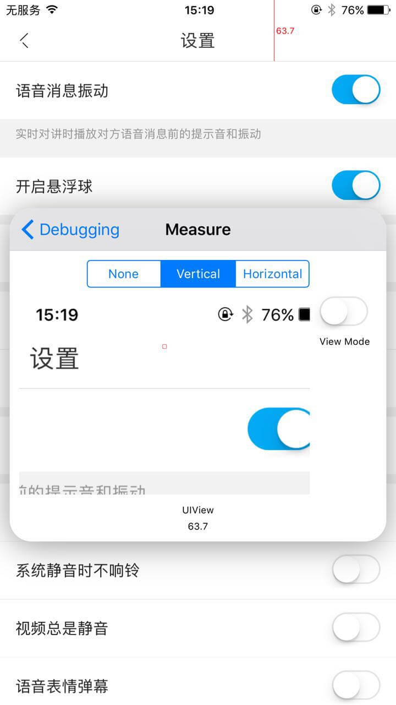

前几天在博客上看到一篇文章《震惊！iOS 系统居然自带悬浮窗口调试工具》,看完之后笔者真就震惊了，有这样好的UI调试工具，苹果为什么不公开呢？笔者按照博文中的描述，在app中试了一下，感觉非常好用。
如何开启
在 AppDelegate 的 didFinishLaunchingWithOptions 方法中加入以下代码就可以了。
#if DEBUG
id overlayClass = NSClassFromString(@"UIDebuggingInformationOverlay");
[overlayClass performSelector:NSSelectorFromString(@"prepareDebuggingOverlay")];
#endif
运行后，用两个手指头在状态栏上同时点击下就可以显示出这个调试的悬浮层。
悬浮窗主界面
可以看到大概有这样几个选项，
- View Hierarchy（查看View的层级关系）
- VC Hierarchy（查看ViewController层级关系）
- Ivar Explorer（查看UIApplication 的成员属性）
- Measure （测量View的尺寸）
- Spec Compare （对比设计图）
View Hierarchy
进入到这个页面后，可以看见整个view的层级结构。悬浮窗右上角有个Inspect，点击这个可以高亮显示当前选择的View。如图所示：

当前选中的是 SettingSwitchItemView。
我们在页面上选择一个swicth按钮，这时会定位到该view的条目，如图所示：

我们点击右侧的“！”图标，进入到swicth的详情页面，这里展示了view的详西信息，并且可以修改一些属性，比如我们修改这个button的透明度，如图所示：

VC Hierarchy
我们回到悬浮窗的主界面，进入到VC Hierarchy界面看看。
这里是所有的VC的层级关系，一目了然。
Ivar Explorer
接下来我们去Ivar Explorer页面看一下。进到页面后，对里面的一些值不是很熟悉，不知道是哪里的一些值，不过里面，看见了我们熟悉的 AppDelegate 。

点击去看看，有我们更加熟悉的值了，是Appdelegate里我们的一些值。

Measure
笔者认为最实用的就是这个测量功能了，它可以帮助我们测量view的大小。进入这个页面是这个样子的

上面有三个tab选项，None， Vertical， Horizontal，选择Vertical可以测量垂直方向上的距离或者view的高度，选择Horizontal是在水平方向上进行测量。在悬浮窗上还有一个 View Mode的选项开关，开启时，会以View为单位，来测量view的大小宽高；关闭时是以非空白像素为起始端和结束端进行更宽泛的测量。如图所示：
测量headerview高度

测量switch的高度

测量switch的宽度

关闭ViewMode后的测量
Spec Compare
这个功能是比较spec图片和我们辛苦完成的view的，也比较实用，直接可以看出我们我们扣代码出来的界面和UI给出的设计图的差别。进入到这个页面后，点击右上角的Add进入相册把UI设计师给出的设计图添加进来，如图：

然后点击一下图片，这时会把UI设计图覆盖在界面上，然后，我们用手指从上到下滑动，就可以让UI设计图变得透明， 双击退出。如图：

大家可以看见重影，这个是笔者专门准备了一张尺寸不对的UI设计图
总结
这个工具很实用，大家赶紧在自己项目中试试吧！